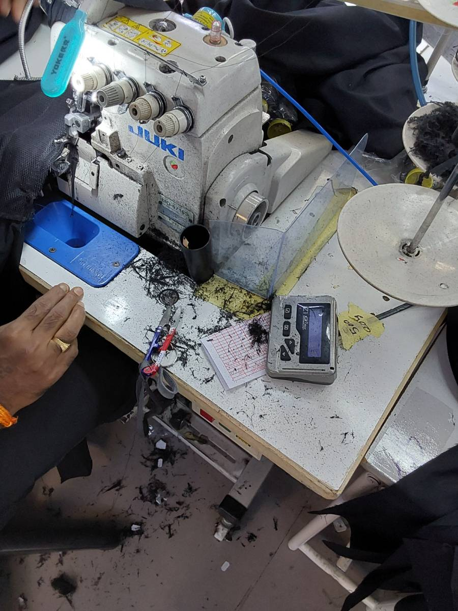
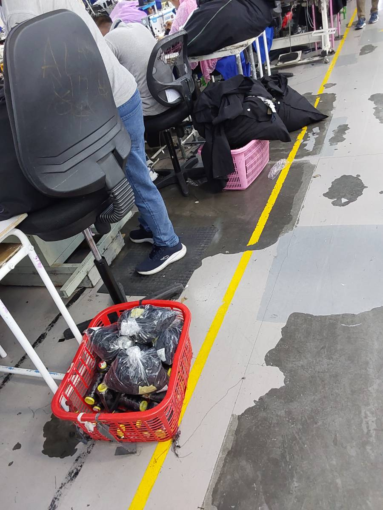
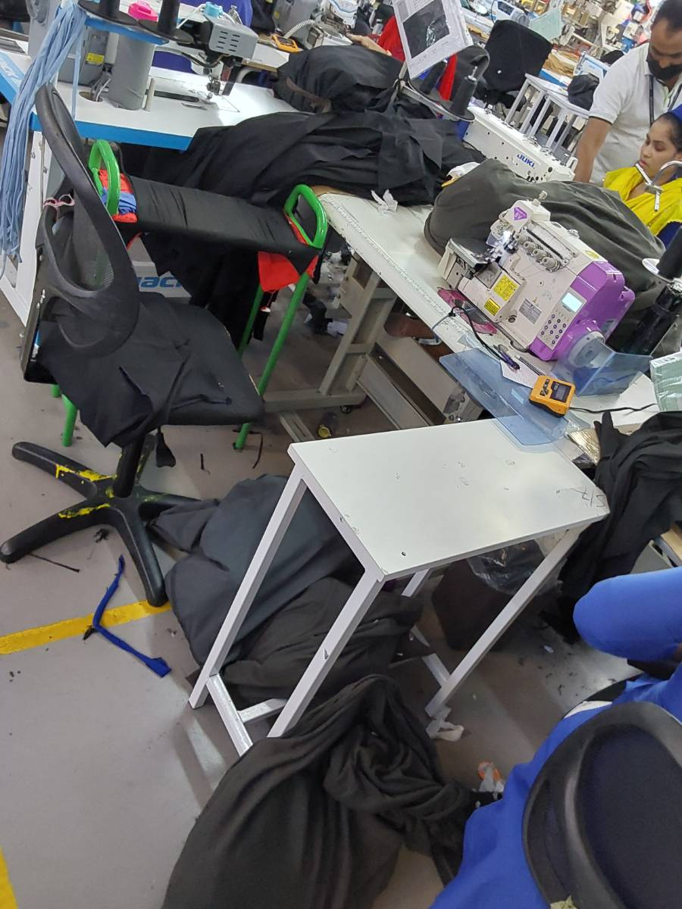
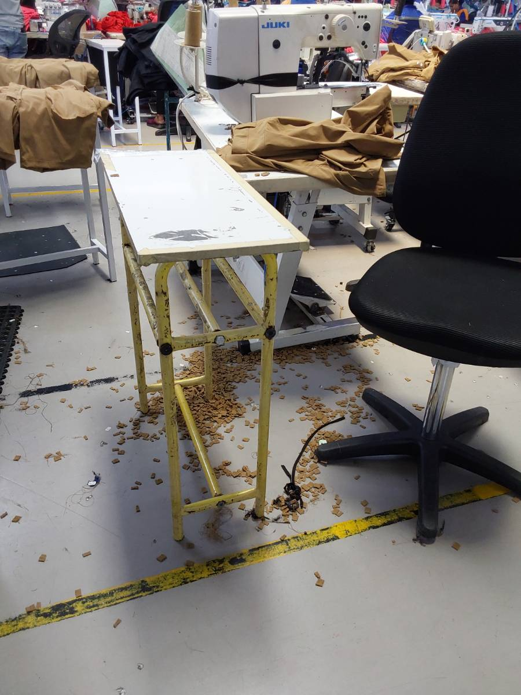
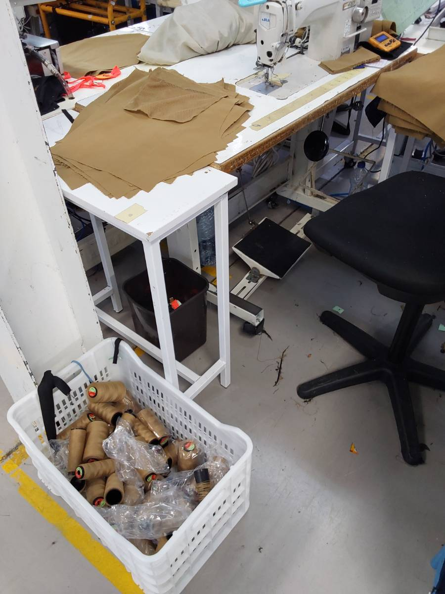
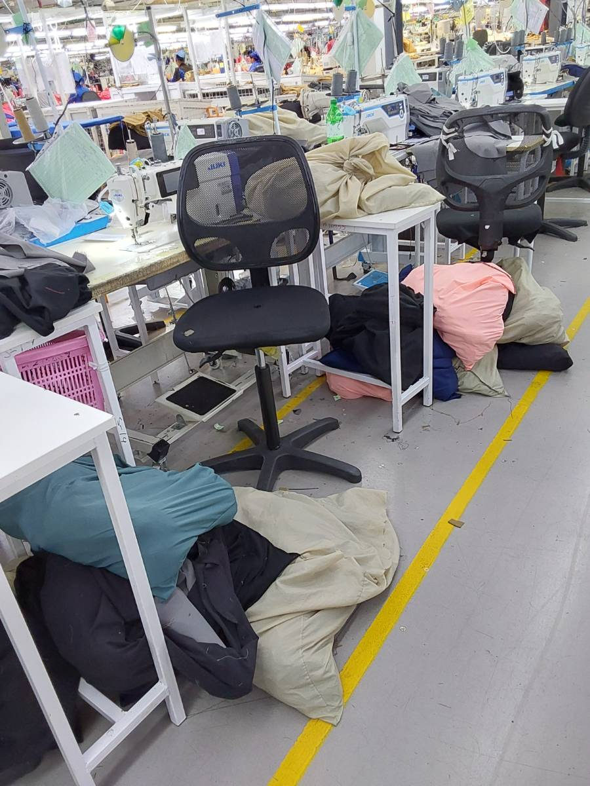

Why Floor Audit Was Built
Quality and 5S compliance audits across 30+ production lines were historically conducted using paper clipboards. By the time audit scores were typed into spreadsheets at week's end, defect batches had already moved into finishing, and repeat non-conformances were rampant.
Clipboard Auditing Limitations
- Subjective Disputed Findings: Line chiefs argued against paper audit marks, claiming auditors had biased or unverified claims without photo evidence.
- Zero Shopfloor Urgency: Scores remained buried on clipboards, meaning line operators had no idea whether their line was passing or failing.
- Slow Corrective Actions: Safety hazards, blocked fire extinguishers, or oily sewing guides sat unresolved for days.
- External Audit Inefficiencies: Global brand quality inspectors and external compliance auditors had to wait hours for compiled physical audit records.
The Digital Audit Solution
- Mobile Tablet Checklists: Quality auditors walk the floor with digital tablets, scoring parameters with one tap.
- Mandatory Photo Upload Evidence: Every single non-conformance requires a live photo upload proving the finding.
- Dedicated TV Wallboard Mode: Large ceiling-mounted LED screens stream live audit leaderboards, driving healthy line competition.
- Instant Corrective Action Workflows: Non-conformances trigger instant alerts to line supervisors with mandatory closure deadlines.
Floor Audit & Wallboard Capabilities
Real-Time KPI Dashboard
Instant plant executive overview displaying Total Audits, Active Lines, Supervisor Incharges, Compliance Rate, and line-wise trend curves.
Live Photographic Evidence
Auditors snap defect photos directly from tablets during walkthroughs. The backend automatically compresses, timestamps, and attaches photos to line records.
Ceiling TV Wallboard
High-contrast, auto-scrolling wallboard display engineered for 65-inch plant monitors, cycling through line compliance rankings and live scores.
Weighted Line Scoring Engine
Computes composite compliance percentages weighting critical safety and needle violations heavier than minor aesthetic housekeeping infractions.
Pareto & Incharge Analytics
Tracks line and supervisor progress over time, breaking down chronic quality defects into Pareto distributions for root-cause elimination.
Admin Parameter Management
Full control over line assignments, supervisor rosters, dynamic audit parameters, and threshold score criteria without code changes.
Floor Audit Data Pipeline
Shopfloor Audit Evidence & TV Wallboards
Switch tabs to explore photographic audit evidence, live TV wallboards, and mobile audit workflows.

Machine Guide Inspection
Auditor photographic evidence: checking needle plate clearance and thread stand stability.

Operator Workstation 5S Check
Verifying bundle staging bins, clear walkways, and ergonomic chair alignment.

Under-Table Cleanliness Audit
Verification that machine motor drive belts are free of lint accumulation and waste fabric.

Line Feed Presentation
Auditing cut bundle alignment to ensure pieces are handled without wrinkling or soiling.

Needle Guard & Eye Protection
Mandatory safety checklist ensuring eye shields and finger guards are securely engaged.

Aisle Clearance & Safety Compliance
Auditing emergency egress aisles to ensure unblocked passage during plant evacuations.
| Rank | Sewing Line | Line Chief | 5S Rating | Safety Compliance | Status |
|---|---|---|---|---|---|
| 🏆 1st | Line 01 | S. Akter | Excellent | Passed All Guards | BENCHMARK |
| 2nd | Line 09 | M. Rahman | Good | Cleared Egress | COMPLIANT |
| 3rd | Line 17 | R. Kumar | Action Required | Lint Clean Out Pending | CORRECTING |
Streamlined Audits & Factory Floor Culture
Safety and housekeeping violations identified and assigned instantly, reducing follow-up cycle times and supervisor paperwork.
Completely eliminated physical clipboards and handwritten checklists with structured mobile tablet audits.
Public overhead wallboard rankings created positive peer motivation, elevating cleanliness and safety across all lines.
Provides immediate digital proof of compliance during unexpected customer walkthroughs and third-party buyer audits.